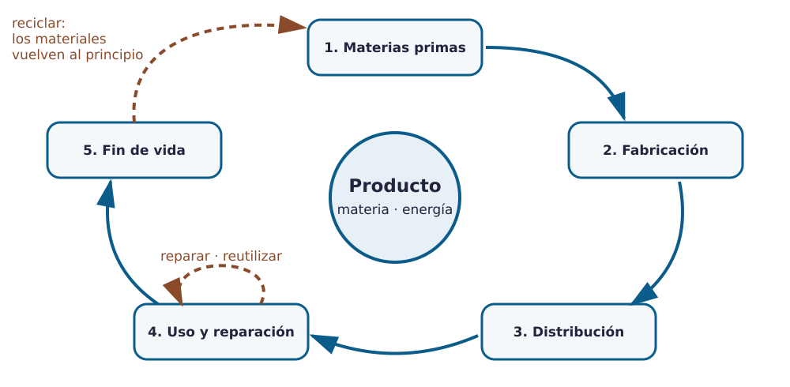
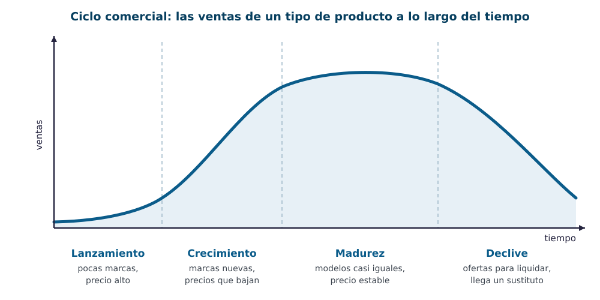

Contenido
Qué vas a aprender
Que un producto tiene una vida: nace de unas materias primas, se fabrica, se transporta, se usa y acaba en algún sitio. Vas a analizar esa vida en un objeto real y a descubrir dónde se decide que un producto sea bueno o malo para las personas y para el planeta.
El ciclo de vida de un producto
Cuando compras un objeto solo ves un momento de su historia. Antes hubo minas, campos o pozos de petróleo, fábricas, camiones y almacenes; después habrá reparaciones (o no), un contenedor y, con suerte, un reciclaje. Ese recorrido completo se llama ciclo de vida y tiene cinco fases:

Ampliar figura (nueva pestaña)
| Fase | Qué ocurre | Impacto típico | Ejemplo: botella de plástico |
|---|---|---|---|
| 1. Materias primas | Se extraen y preparan los materiales. | Consumo de recursos, energía, agua; daño al entorno de donde se extraen. | Petróleo → plástico PET. |
| 2. Fabricación | Se transforman los materiales en el producto. | Energía, residuos de fábrica, condiciones de trabajo. | Moldeo de la botella, etiquetado, llenado. |
| 3. Distribución | Embalaje, almacén, transporte y venta. | Combustible del transporte, embalajes de un solo uso. | Palés, camiones, supermercado. |
| 4. Uso | El producto cumple su función; se mantiene o se repara. | Consumo durante el uso (energía, recambios); duración real. | Se bebe una vez… o se rellena muchas. |
| 5. Fin de vida | Se tira, se reutiliza, se recicla o se recuperan materiales. | Vertedero, contaminación; o materiales que vuelven al ciclo. | Contenedor amarillo → nuevo PET, o el suelo del patio. |
Lineal o circular
Si el ciclo termina en el vertedero, hablamos de economía lineal: extraer, fabricar, usar, tirar. Si el producto está pensado para durar, repararse y, al final, convertirse en materia prima de otro, hablamos de economía circular. La diferencia se decide sobre todo en la fase de diseño: un objeto pegado con adhesivo no se puede reparar; uno atornillado, sí.
Las erres, por orden de importancia
Rechazar lo que no hace falta · Reducir material y energía · Reutilizar el objeto para lo mismo u otra cosa · Reparar antes que sustituir · Reciclar los materiales cuando ya no hay más remedio. Reciclar va la última: también consume energía.
Otra vida distinta: el ciclo comercial
Lo que has visto hasta ahora es la vida física de un objeto concreto: el aparcabicis que está en tu instituto, desde el mineral hasta la chatarra. El ciclo comercial es otra cosa: es la vida de un tipo de producto en el mercado, medida por sus ventas a lo largo de los años. Un aparcabicis concreto puede durar treinta años, mientras el modelo que lo vendía ya ha dejado de fabricarse.

Ampliar figura (nueva pestaña)
Las cuatro fases son: lanzamiento (pocas ventas, mucha publicidad), crecimiento (las ventas suben deprisa), madurez (ventas altas y estables, muchos competidores) y declive (las ventas bajan porque aparece algo mejor o cambia la moda). Los fabricantes intentan alargar la madurez con versiones nuevas, colores o accesorios.
Casi nunca podrás ver las cifras de ventas de un producto. Lo que sí puedes hacer es buscar pistas observables y razonar a partir de ellas:
| Fase | Pistas que se pueden observar |
|---|---|
| Lanzamiento | Lo venden una o dos marcas; es caro; mucha gente no sabe qué es. |
| Crecimiento | Aparecen marcas nuevas cada poco; los precios bajan; se ve cada vez más por la calle o en las tiendas. |
| Madurez | Muchas marcas venden modelos casi iguales; el precio apenas cambia; se compite con colores, accesorios o «versiones nuevas». |
| Declive | Las tiendas lo retiran o lo liquidan con ofertas; ya existe otro producto que hace lo mismo mejor. |
Ejemplo: ¿en qué fase está el aparcabicis en U?
Lo que hemos visto: en tres webs de mobiliario urbano hay muchas marcas con modelos casi iguales, y el precio de un modelo parecido apenas cambia de una tienda a otra. Lo que deducimos: está en madurez. Lo que no sabemos: cuántos se venden cada año. Fíjate en que la conclusión sale de las pistas, y en que se dice lo que no se ha podido comprobar.
Obsolescencia: cuando un producto deja de servir
Muchos productos se dejan de usar antes de romperse del todo. A eso se le llama obsolescencia, y hay tres tipos:
| Tipo de obsolescencia | Qué es | Ejemplo |
|---|---|---|
| Programada | El producto se diseña a propósito para fallar o dejar de servir en un plazo. | Una impresora que se bloqueara al llegar a un número fijo de copias aunque todas sus piezas funcionaran. |
| Percibida | Sigue funcionando, pero «parece viejo». | Móvil de hace dos años con la cámara «antigua». |
| Tecnológica | Deja de ser compatible con lo nuevo. | Cargador con conector que ya no se fabrica. |
Cuidado con llamar «programada» a todo
Una batería pegada que no se puede cambiar dificulta la reparación y acorta la vida del aparato, pero eso no basta para hablar de obsolescencia programada: solo se puede afirmar si hay pruebas de que el producto se diseñó para fallar. Si no las tienes, describe lo que ves («la batería no se puede cambiar») y di qué consecuencia tiene.
Un análisis con criterio ético e inclusivo
Analizar un producto no es solo mirar de qué está hecho. También hay que preguntarse a quién sirve y a quién deja fuera: ¿lo puede usar una persona con movilidad reducida, con poca vista, zurda, mayor, con pocos recursos? ¿Quién lo fabricó y en qué condiciones? ¿El precio incluye lo que cuesta deshacerse de él? Un producto bien diseñado responde bien a esas preguntas; uno mal diseñado las esquiva.
Analizar con rigor: dato, suposición y «no lo sabemos todavía»
En un análisis serio cada frase es de uno de estos tres tipos, y se nota cuál es:
- Dato con fuente: algo que has leído o comprobado, y dices dónde («ficha técnica del fabricante», «etiqueta», «web de una tienda», «lo vimos en el parque»).
- Suposición: algo que crees razonable pero no has podido comprobar. Se escribe empezando por «Suponemos que…» y se explica en qué te basas.
- No lo sabemos todavía: algo que has buscado y no has encontrado. Escribirlo no es un fallo: es mucho mejor que inventarlo.
Ejemplo completo: ficha de análisis de un aparcabicis en U de acero
Producto y fuentes ficticios: sirven para que veas cómo se rellena cada apartado de la ficha y cómo se señala de dónde sale cada cosa.
| Apartado de la ficha | Lo que se escribe |
|---|---|
| 1. El producto | Aparcabicis en U para cinco bicis, de tubo de acero galvanizado, para anclar al suelo. Unos 300 € (dato · web de una tienda de mobiliario urbano). Intenta resolver nuestra necesidad: aparcar las bicis sin bloquear la entrada. Fuentes: ficha técnica del fabricante, web de la tienda y un aparcabicis parecido en un parque cercano (observado). |
| 2. Materias primas | Tubo de acero de 5 cm de diámetro recubierto de zinc (dato · ficha técnica). El acero se obtiene del mineral de hierro y el carbón. Suponemos que lleva parte de acero reciclado, porque es habitual en el acero, pero la ficha no lo dice (suposición). |
| 2. Fabricación | Corte del tubo, curvado en U, soldadura a una pletina de anclaje y galvanizado en caliente: la pieza se sumerge en zinc fundido (dato · ficha técnica). Suponemos que gasta mucha energía, porque hay que fundir el zinc y calentar el acero (suposición). |
| 2. Distribución | Se envía en palé, sin montar (dato · web de la tienda). Dónde se fabrica: no lo sabemos todavía; la web no lo dice y vamos a preguntarlo a la tienda. |
| 2. Uso | Garantía de cinco años frente a la corrosión (dato · ficha técnica). Puede durar décadas sin mantenimiento si el galvanizado no se daña: el del parque tiene arañazos con óxido en los bordes (observado). |
| 2. Fin de vida | El acero es técnicamente reciclable casi al 100 %; que se recicle de verdad depende de que, al retirarlo, llegue a un chatarrero o a un punto limpio (suposición). Qué hace el ayuntamiento con los que retira: no lo sabemos todavía. |
| 3. Demanda y evolución | Madurez: muchas marcas con modelos casi iguales y precios parecidos en tres webs (dato · observado). Obsolescencia: no vemos ninguna; no depende de ningún aparato que deje de fabricarse. Lineal en el origen (acero nuevo) y circular al final si se recicla; los anclajes atornillados permiten desmontarlo y llevarlo a otro sitio. |
| 4. A quién sirve y a quién deja fuera | Sirve a quien llega con una bici de tamaño normal. Deja fuera las bicis infantiles y los patinetes, que no se apoyan bien en la U (dato · probado con el del parque). Si se colocan muy juntos, también a quien maniobra con dificultad. Condiciones de trabajo en la fábrica: no lo sabemos todavía. |
| 5. Veredicto | Lo mejor: dura mucho y se puede reciclar. Lo peor: gasta mucha energía al fabricarse y no sirve para patinetes. Mejora: una barra baja dentro de la U para patinetes y bicis pequeñas (mejora la fase de uso). Datos sin comprobar: cuánto dura de verdad y qué parte del acero es reciclada. |
Fíjate en tres cosas: cada dato dice de dónde sale, las suposiciones explican en qué se basan y lo que no se ha encontrado se dice, no se inventa.
Ahora inténtalo
Actividad 5 · Análisis de ciclo de vida de un producto
Cada persona del equipo analiza un producto real que ya intente resolver la necesidad elegida (si el equipo eligió las bicis: un aparcabicis comercial; si eligió la sombra: una pérgola o un toldo). Si la necesidad admite varios productos, repartidlos.
- Rellena la ficha de análisis de producto: las cinco fases, la demanda y evolución, la obsolescencia, a quién sirve y a quién deja fuera, y un veredicto con una mejora.
- Escribe con precisión: materiales y procesos con nombre. Como en el ejemplo completo, di de dónde sale cada dato, marca las suposiciones y escribe «no lo sabemos todavía» cuando no encuentres algo.
- La conclusión de las fichas del equipo se resume después en el dossier (apartado 2). Os dará pistas para idear: lo que el producto hace mal es lo que vuestra propuesta puede mejorar.
Crear mi copia de la ficha de análisis de producto (se guarda en tu Drive).
Entrega en Moodle
Tarea Análisis de producto. Archivo: analisis_producto.pdf. Individual. Exporta tu ficha a PDF y súbela.
Lista desordenada
Ordena las fases del ciclo de vida de una botella reutilizable de acero.
- Extraer el mineral de hierro y fabricar el acero
- Conformar la botella, soldar y pulir en la fábrica
- Embalar, transportar y vender
- Usar durante años, lavar y cambiar la junta del tapón
- Llevarla a un punto limpio para que su acero se recicle